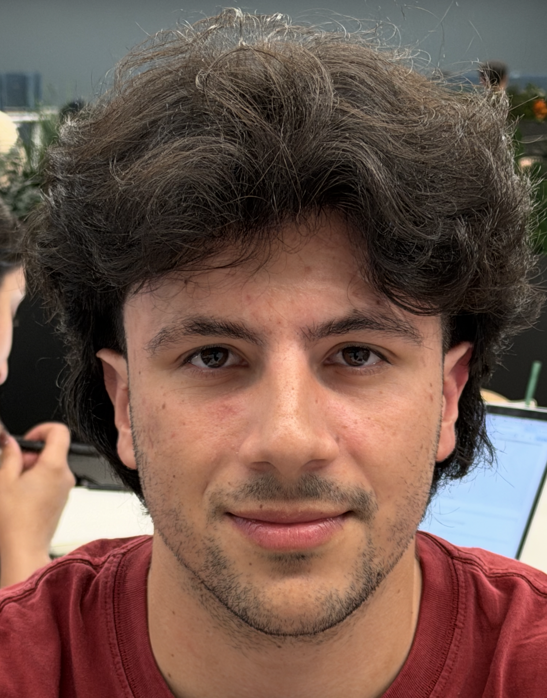

Projects
1 published · more to come
Project 0
The Camera Is Never Neutral
Focal length, distance, and perspective distortion — tested on my own face and a campus building.
Read the write-up →
Project 1
[PROJECT TITLE]
Not published yet.
Project 2
[PROJECT TITLE]
Not published yet.